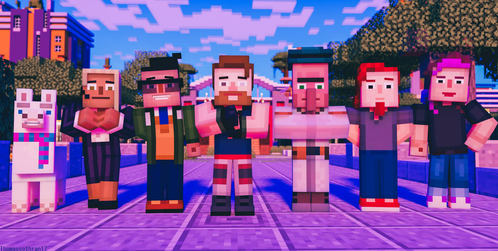
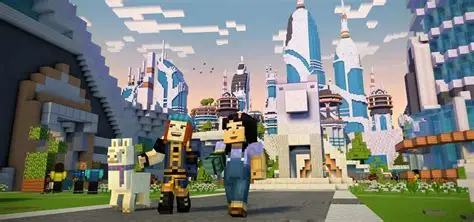

Luna
Lluna is a pet mob and Stella's pet llama who first appeared in Minecraft: Story Mode - Season Two, "Hero in Residence". where she and Stella met Jesse's Gang and went along with their adventure of stopping Romeo.
Radar
Radar is a major character in Minecraft: Story Mode Season Two. He is one of Jesse's friends and their assistant/intern throughout most of the season. He makes his first appearance in "Hero in Residence". He develops from being a cowardly intern that runs at the first sight of danger towards becoming braver and more confrontational as the story progresses. He is voiced by Yuri Lowenthal.
Nurm
Nurm is a major character in Minecraft: Story Mode, Season 2. He first appeared in "Hero in Residence" and is voiced by Mark Barbolak. Nurm is a cartographer villager. He wears a green hat with a black stripe and a white feather stuck into it. He has a gold belt and cuffs.Nurm does not talk much, but he is very intelligent, being "the genius behind all of (Jack's) fine maps", and can read the runes in the Sea Temple. Unlike Jack, Nurm believes in the existence of the Admin genuinely. Nurm can get scared in dangerous situations, but he trusts Jack and is daring enough to go adventuring with him. As an exception, he does fight in "Jailhouse Block," when he uses two iron axes to fight hostile mobs. He is willing to sacrifice himself for others, shown in "Jailhouse Block" when he offers to stay behind in the prison so Lluna can leave.
Jack
Jack is the tritagonist of Minecraft: Story Mode, Season 2. He is an experienced adventurer who aided Jesse on their adventure to defeat the dreaded Admin. He made his first appearance in "Hero in Residence". He is voiced by Fred Tatasciore. Jack has dirty-blonde hair and a beard, brown eyebrows, and one black pupil and one gray pupil that he calls his "bad eye." He wears a blue vest (called "The Vest of Five Fists," gifted to him by the Singing Clerics of Try'bal Cliff), black gloves, white pants with brown and blue stripes, and black shoes. His left eye is determinately damaged if the player chooses to help Petra get her sword instead of rescuing him in the Sea Temple, and he will have an eye patch for the rest of the game. In "Jailhouse Block", if Jack doesn't become Romeo's "champion", he wears an orange prisoner jumpsuit with the sleeves ripped off.
Stella
Stella is the secondary antagonist/tritagonist of Minecraft: Story Mode, Season Two. As the founder of Champion City and the caretaker of Lluna, she makes her debut in "Hero in Residence" where she would refer to Jesse as her "sworn rival." Her fixation on treasure is evident, often referring to Lluna as a "treasure-sniffing llama." she tricks Petra into borrowing her golden sword under the guise of displaying it for it's luxurious beauty.

the admins

more information on this image